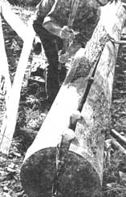
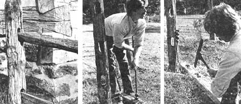
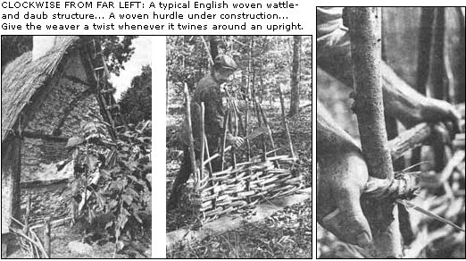
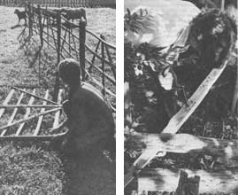
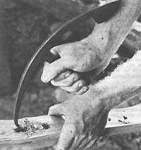
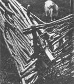

Excerpted from The Woodwright's Companion by Roy Underhill. Copyright © 1983 by The University of North Carolina Press. Reprinted by permission of the publisher.
Roy Underhill is familiar to many television viewers as "The Woodwright," a down-to-earth fellow who, once a week, departs the big city, strolls down a highway, crosses a train trestle, and unlocks the door to his nineteenth century carpenter's shop. For the next 30 minutes, Roy invites viewers to learn as he puts it "how to start with a tree and an axe and make one thing after another until you have a house and everything in it".
"Bull strong, horse high, and pig tight," and the goats will still get through.
Fences, like houses, tell a lot about the people that made them. The stone walls and well-kept hedgerows of England speak of stability and long-established patterns. Early visitors to the booming American colonies derided the shabby appearance of the log houses and zigzag split-rail fences. The snake, or worm, fence was so characteristic of the new American landscape that it was commonly known as a "Virginia fence." This sort of fence gets its stability and its other names from the same source as the serpentine wall.
One great advantage of the snake fence is that it can be built with little more than an axe. You simply split a ten-foot length of log into rails and lay them crisscross on the ground-no postholes to dig or joints to cut. Since it has no permanent connection with the ground (it's best to raise each intersection up on a rock), the fence can be moved about at will or an opening made at any point. The simple snake fence becomes unstable after it reaches about ten rails high, but can still be raised higher by using crossed rails and riders at every intersection, or "lock." These add enough height to keep horses from jumping the fence. One of my earliest encounters with principles of rural economy involved the snake fence.
Passing a zigzag rail fence near Clifton Forge, Virginia, a friend, obviously echoing the words of his father, remarked, "Snake fences waste land." In one way I guess it's true: It's difficult to plow and plant in the zigs and zags. Grazing animals, though, get in there just fine, and the side away from the animals, which cannot be cut, becomes a refuge for wildflowers and birds. Even if the corners can't be cultivated, some stray seed is bound to take hold there. The best corn and the best tobacco I remember was that which had to be handpicked because it grew in the "jamb of the fence."
As appropriate as the snake fence was to a new world, it was, like the log house, something new and unfamiliar to the English mind. If you think about it, a snake fence is simply a log house that has been stretched out. For an Englishman the more familiar manner of house building was to use upright posts with holes cut through them to receive the horizontal beams. This is the way he built houses, doors, and windows, and it is how he built fences.
A straight-line, post and rail fence is not self-supporting, and holes must be dug. This was originally done with shovels alone and later with the iron pikes and dipper spoons that preceded the now Familiar posthole digger.
The posts must be made from the heartwood of a resistant species if they are to endure. Cedars, chestnut, walnut, sassafras, catalpa, and Osage orange are all commonly used for posts. One most-favored wood is the black locust, which is reputed by some to last two years longer than stone. Others say that it will last twice as long as the hole. One man even claimed that it will last two lifetimes-and says he knows 'cause he's seen it.
The ends of the posts are often charred in a fire in an attempt to further protect them from decay. The utility of this activity is questionable, however, as the only effect is to sterilize the wood if fungus is already present. The charcoal on the burned surface of the wood will not decay, but it has no strength and is not an effective barrier against the decay organisms always present in the soil. At most, charring buys an extra year or so.
Once the vertical posts are set in the ground, the rails must be set between them. Fixing the rails to the posts with nails would not make a very strong connection. This is a practicable method only when fencing with lighter sawn boards.
Rails need to be housed in holes or mortices through the posts, and there lies the problem with this type of fence. Chopping the narrow holes through the uprights is not an easy task, but this is largely the way it was done until the advent of the spiral auger at the end of the eighteenth century. Earlier augers were nowhere near as easy to use as the spiral auger with the center lead screw. The spiral auger will start easily on a curved surface and pull itself on through, enabling one to work faster and on rougher wood. Simply bore two holes and split out the wood in between to make the mortice. Then thin down the ends of the rails with an axe, and assemble.
Both the snake fence and the post and rail fence have their analogues in portable fences called hurdles. Used mainly for folding sheep and other small stock, they are more common in Britain than on this side of the Atlantic. One reason for this is the difference in agricultural practices between here and there. The crowded isles need much greater control and more intensive land-use practices than have been necessary in the comparative vastness of America. Still, hurdles are useful anytime it is necessary to move animals about and still maintain control over them, as when we take the goats into town for market day on the green. We are often set up near the vegetable stalls, and a strong pen is essential.
There are two sorts of hurdles, the woven wattle hurdle and the five-bar gate hurdle. The wattle hurdle is the elder of the two. As they are woven rather than jointed, their manufacture requires only the most minimal tools; that is, little more than a sharp blade. The production of wattle hurdles is associated with a specific sort of woodland growth called "coppice." Coppice refers to the forests of shoots that arise from the still-living stumps of harvested timber. Even when trees were too large to be used effectively with primitive tools, one could always kill the upper part of the tree by ringing the trunk with an axe. The well-developed root system of the tree would then put all of its energy into sending up sprouts from the stump and roots. These shot up quickly and hence were very straight, knot free, and easily worked by hand splitting.
Like willow for basketry, coppice wood for hurdles was first harvested from the wild and then later cultivated to ensure a steady source of high-quality material. In Tudor England the wool industry (and, hence, sheep control) became so important that hazelwood coppices were established solely for the production of wattle hurdles. Careful management can keep a coppice productive for generations. The usual rotation, or lapse between harvests, is seven years. Production hurdle makers must work close to the coppice, as the weaving requires the wood to be fresh, green, and pliant.
The tools of the wattle hurdle maker are a heavy hooked knife called a billhook and a 7-foot-long heavy timber with ten holes bored at equal intervals along its length to hold the uprights in place while-the weaving goes on. This timber, or at least the pattern of holes for the uprights, is best made in a curve to keep the hurdle stiff as it is being woven. Curved, it can support a considerable weight; left flat it would buckle immediately. When the completed hurdle is removed from the timber and stacked to dry, the curve flattens out and the tension holds the weaving tight.
There is another trick to making hurdles, or any other item that involves making a sharp bend back on the stock. When you turn the split-hazel weavers about the end uprights, give them a solid spiral twist as you bend them back around. This twist makes the fibers of the wood behave as though they were a rope and allows them to take the bend without splintering.
The bottom and top courses of the weaving need to be different from the infilling. Two rods are intertwined around the uprights, like a multistrand rope with sticks stuck through it. The uprights on either end need to be somewhat stouter than the other eight and left longer and pointed on their bottom ends so that they may be driven into the ground to hold the hurdle up.
I don't get much call for wattle hurdles and it's a good thing, for the material to make them is not generally available. Gate hurdles, however, are always in demand; the sheep people can never get enough. A hurdle of any kind needs to be both strong and light. Cleft oak provides the best combination of strength, light weight, and decay resistance. All the parts are split rather than sawn from the log, preserving the integrity of the grain from end to end and flowing around any knots or bends. To equal their strength in sawn material one would need pieces of greater dimension and weight, which would require more energy to make and move about.
Making gate hurdles is a pleasant undertaking from start to finish. They are generally 6 feet long by 3 feet high. Start with fresh whiteoak logs (other species will do, but this is all that I have ever used) in 6foot lengths. Split the log in half, and then in half again, and so on. Once you get down to pieces about a handbreadth thick, you can start and open the split with the wedge, axe, or froe enough to get in a hand and a foot and tear it apart. Keep splitting until you have all the bars that you will need; that is, five or six for each hurdle, measuring about 2-1/2 inches by 1/2 inch. Failed lengths can be used for the braces and center uprights. The stout end posts should be made 1 inch by 2-1/2 inches and 4 feet long. All the stock should be heart of oak; any white sapwood left on will quickly lead to rot and ruin.
All the posts will be morticed in the same manner, so you will save time by making a guide stick with notches or nails at the ap propriate points to speed the layout. Leave about 10 inches on the bottom of the posts-the part that will go into the ground-before the slot for the bottom rail and about 4 inches above the mortice for the top rail. Since young, unruly animals are usually short as well, the bottom rails need to be spaced closer together than those toward the top.
The mortices can be quickly chopped out with a chisel in the fresh wood, but another way, and one that I quite enjoy, employs a brace and bit and what is called a hurdle maker's twivil. It is called a twivil or twibil because it is a double-ended tool with two "bills." One of the ends of the T-shaped tool is shaped like a sharply hooked chisel; the other, like a broad knife. To make the mortice, bore two spaced holes through the post at the ends of where each mortice is to go. Then, with the hooked end of the twibil, reach in one of the holes and lever out the wood in between. It may take two or three bites to get it all out. The knife end can sever any recalcitrant grain and clean up any mess that is left.
When the mortices are chopped with a chisel, the post needs to be firmly supported on a bench or stump. When working with a bit stock and twibil, however, you can hold the work by springing it between two horizontal bars and the top of a small stump. This holds the post firmly and gives the hook of the twibil and the knife space to work through without hitting the bench top.
When all the posts have been morticed through, chop their bottom ends to points to go into the ground and knock the corners off the top end to center the blows from the mallet used to drive them into the ground. Now set the rails in place with a half inch or so of their ends protruding through the mortices. The top rail, the bottom rail, and the third rail from the bottom are held in their mortices by oak pegs driven through holes bored through the sides of the posts. The other rails can be left free.
The center upright and the diagonals are held to the rails by nails that are clinched over on the back side. The best sort of nail for this is what is called a "clout" nail. They are designed to punch through the wood without splitting and, upon hitting an iron plate placed on the underside of the two pieces to be joined, to clinch themselves. Clout nails should be available through hardware dealers, but wire nails will do just as well if you must use them. They may tend to split the wood, but this can usually be avoided by blunting the point or predrilling the hole. Get the center upright in first and then place the diagonal braces by eye.
Hurdles will support themselves; the pointed bottom ends of the uprights can be forced into the ground by the weight of your foot on the lower rail. The tops of the uprights may be joined by cords or wire loops. A more permanent structure can be had by driving stouter posts into the ground at the juncture of each pair of hurdles.
When I lived in New Mexico, I once made about a half mile of the woven type of fencing-at the strong suggestion of my non-goat lover neighbors, who stressed the importance of hemp gardening to the local economy. I spent several weeks cleaving, weaving, and pounding wood, winding my way between the aspen trees. When the task was finally done, the relieved community of gardeners gathered to watch the herd's reaction to its new home. Someone produced a cardboard sign to tack over the gate which read, "Abandon hope all ye who get out of here." Florence, the defiant queen nanny of the herd, promptly danced up on her hind legs, seized the sign, and ate it down. I should have known.
One week and three devastated gardens later, the wide-eyed goats and my exhausted self decided that it might be healthier back East. The ten thousand fences between us and my outraged neighbors just might be enough.
EDITOR'S NOTE: We think our readers will find the books written by TV host/author Roy (who also finds time to be the master housewright at Virginia's Colonial Williamsburg) to be as informative and entertaining as this excerpt. Copies of The Woodwright's Shop ($11.95) and The Woodwright's Companion ($12.95) are available for their list prices-plus $1.25 shipping and handling-from Mother's Bookshelf, 105 Stoney Mountain Road, Hendersonville, North Carolina 28791.
|
 ABOVE: Splitting rails with a wooden mallet and wedges. BOTTOM, LEFT TO RIGHT: Fine Early American construction can be seen in this log wall and post and rail fence... Boring the holes for a new post.... The waste is chopped away with a mortice axe. |
 |
 |
|
 |
 |
 |